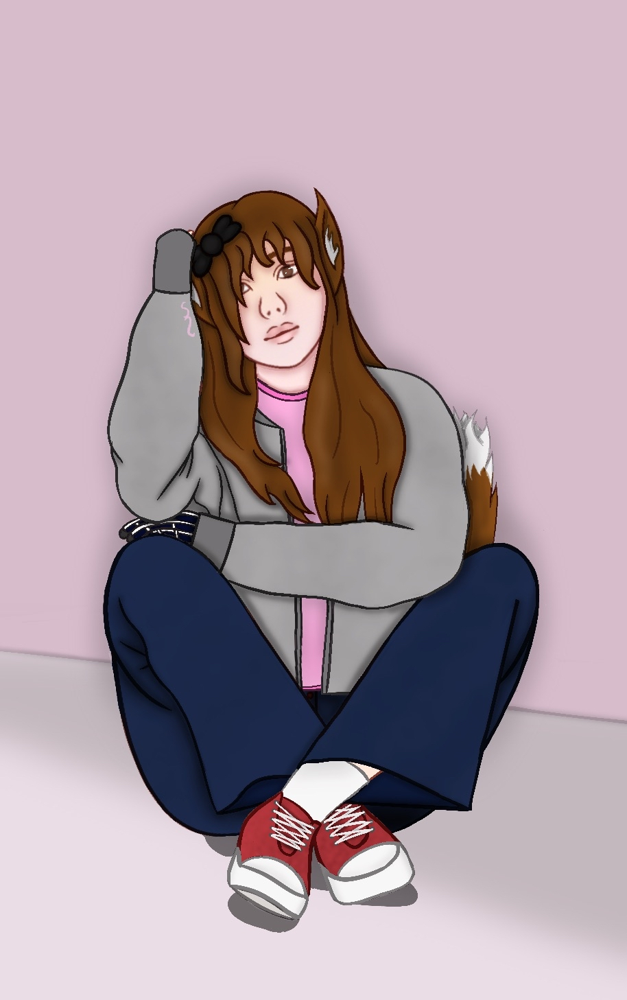
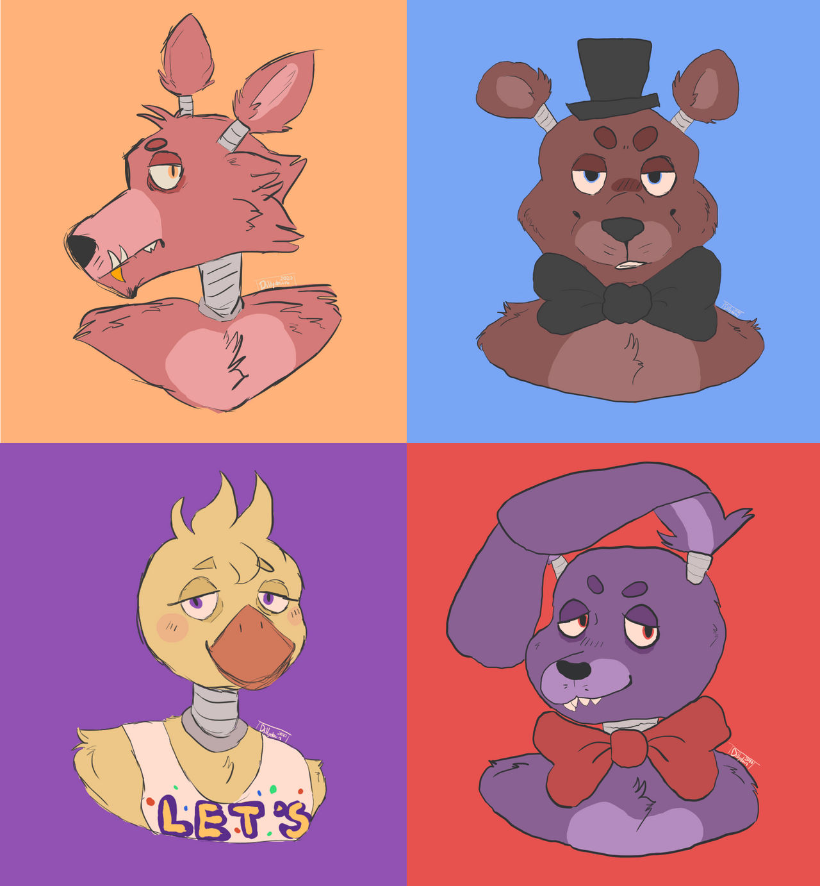

"Yar har har, never underestimate the cunning of a pirate! or a fox for that matter!"
Current Name: Foxy
Possible Name?: Lilly
Nicknames: Robot Best Friend (Eren)
Lifespan: 5 years
Possible Age?: 23
Race: Possessed Animatronic Fox (Formally Human)
Title: The Pirate Fox
Current Appearance: A red fox animatronic, with a light brown stomach and brown shorts. His hand is a hook and he wears an eyepatch over his yellow eyes. He is very broken and destroyed, his entire lower legs down to the endoskeleton.
Hobbies: Singing Shanties to himself and shining his hook.
Skills: A hook for a hand, Epic Pirate Accent, surprisingly good at knowing villains
Strengths: The most "sane" out of the four (Mainly due to Eren being his best friend), Quick and Versatile
Weaknesses: Uber Lonely, Outcasted out of the group due to natural danger (Eren tries to include him into the group)
Likes: Performing for the kids, Hanging out with Eren, The Open Seas
Dislikes: Not being able to perform, Anybody insulting Eren, Being stuck all day, bright lights
Maybe was Lilly. Now Foxy. Boy or Girl? Idk, we tried debating this.
"Yarr, he be me first matey"
How they met: Originally another soul with him, they bonded as the victims.
Personal Sentiments: Eren be the only reason Foxy turns on in a day other than the lads and lassies. He be happy someone cares for 'im
Extras: Don't ask what they have going on between them.
"Miss managarr be kind to me, she be the best"
How they met: Knowing her first as the Puppet, she used to be like a mother figure to them
Personal Sentiments: Foxy be glad Sugar has his back against the others. She be the one lettin him sing his shanties, so he's thankful for 'er
Extras: Her laddy be strange, but he be glad she be happy.
The Band
"They may be th' band, but aye still be on the logo."
How they met: Colleagues
Personal Sentiments: They be mean to him, so he be mean back.
Extras: If it came to it, he'd still help em fight and protect them.
- Purple Tophat and Chocolate